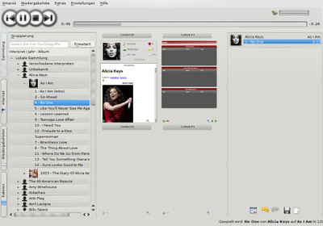
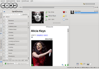
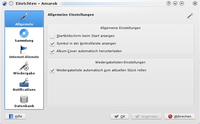

Amarok
Dieser Artikel wurde für die folgenden Ubuntu-Versionen getestet:
Ubuntu 16.04 Xenial Xerus
Ubuntu 14.04 Trusty Tahr
Zum Verständnis dieses Artikels sind folgende Seiten hilfreich:
Amarok 
 ist ein Programm zum Abspielen von Audiodateien und um diese beliebig zu ordnen, sortieren und zu gruppieren. Auch Audiostreams wie Internetradios können verwaltet und abgespielt werden. Amarok wird vom KDE-Team entwickelt, kann jedoch auch in GNOME oder Xfce ohne zusätzliche Installation der KDE-Arbeitsfläche eingesetzt werden.
ist ein Programm zum Abspielen von Audiodateien und um diese beliebig zu ordnen, sortieren und zu gruppieren. Auch Audiostreams wie Internetradios können verwaltet und abgespielt werden. Amarok wird vom KDE-Team entwickelt, kann jedoch auch in GNOME oder Xfce ohne zusätzliche Installation der KDE-Arbeitsfläche eingesetzt werden.
Benannt wurde Amarok nach dem Opus Amarok von Mike Oldfield. Es ist das Inuit-Wort für Wolf, weshalb das Amarok-Symbol einen Wolf darstellt. Amarok ist auf Basis von KDE4 und Qt4 geschrieben. Zur Sound-/Video-Ausgabe verwendet Amarok Phonon, das seinerseits für die Anbindung an verschiedene Multimedia-Frameworks wie z.B. GStreamer sorgt. Das Programm unterstützt:
Coveranzeige
Webradio
Wiedergabelisten
u.v.m.
Installation¶
Amarok 2 ist bei Kubuntu standardmäßig vorinstalliert. Möchte man Amarok unter einer anderen Desktop-Umgebung verwenden, so muss das folgende Paket installiert werden [1]:
amarok (ab Kubuntu 14.04 in universe)
 mit apturl
mit apturl
Paketliste zum Kopieren:
sudo apt-get install amarok
sudo aptitude install amarok
Um die Menüeinträge auf deutsch anzuzeigen, installiert man die KDE-Sprachpakete nach. Unter Unity ruft man dazu "Systemeinstellungen -> Sprachen" auf - die Routine stellt die fehlende Sprachunterstützung fest und bietet die automatische Nachinstallation an.
Bedienung¶
|  |
| Plasmoide |
Nach einer erfolgreichen Installation findet man Amarok im K-Menü unter "Programme -> Amarok (Medienwiedergabe)", bei anderen Ubuntu-Varianten mit einem Anwendungsmenü unter "Unterhaltungsmedien -> Amarok".
Amarok enthält in der Standardeinstellung eine dreispaltige Benutzeroberfläche. Links findet man die Sammlung, den Dateibrowser und die Internet-Angebote. In der Mitte werden die Applets mit den Kontextinformationen zum aktuellen Stück gezeigt und rechts die Wiedergabeliste.
Links - Musiksammlung und Dienste¶
Im linken Bereich hat man Zugriff auf die "Lokale Sammlung", in der alle durch Amarok erfassten Musikstücke zu finden sind. Unter "Internet-Dienste" finden sich Internetradios, Last.fm und weitere Internetdienste. Wenn aktiviert und eingerichtet, kann man hier auch auf Ampache-Server zugreifen. Unter "Wiedergabelisten" findet man von Amarok während der Erfassung gefundene sowie selbst gespeicherte Wiedergabelisten. "Dateien" bietet Zugriff auf das Dateisystem, wodurch man auch Dateien abspielen kann, die nicht in der Datenbank erfasst sind. "Podcasts" schließlich bietet eine komfortable Benutzeroberfläche, um Podcasts zu verwalten.
Musiksammlung¶
In der "Lokalen Sammlung" sind alle Stücke erfasst, die Amarok in den indizierten Verzeichnissen findet. An das System angeschlossene MP3-Spieler oder Massenspeicher wie USB-Sticks werden hier ebenfalls als einzelne Sammlungen angezeigt. Zwischen diesen Sammlungen können Stücke hin und her kopiert oder verschoben werden. Dazu ruft man mittels  das Kontextmenü auf und wählt "Zur Sammlung kopieren/verschieben". Seit Version 2.4 ist es zudem möglich, die Dateien dabei in ein anderes Format umzuwandeln. Dies ermöglicht es z.B., CDs direkt in die Sammlung aufzunehmen ("rippen"). Der Menüpunkt "Dateiverwaltung" ermöglicht es, die Musikstücke innerhalb einer Sammlung entsprechend ihren Metadaten umzubenennen und zu verschieben.
das Kontextmenü auf und wählt "Zur Sammlung kopieren/verschieben". Seit Version 2.4 ist es zudem möglich, die Dateien dabei in ein anderes Format umzuwandeln. Dies ermöglicht es z.B., CDs direkt in die Sammlung aufzunehmen ("rippen"). Der Menüpunkt "Dateiverwaltung" ermöglicht es, die Musikstücke innerhalb einer Sammlung entsprechend ihren Metadaten umzubenennen und zu verschieben.
Mit einem  -Klick auf das Werkzeugsymbol kann man aus drei vorgegebenen Sortierungsmöglichkeiten für die Sammlungen auswählen oder diese selbst anpassen. Hier findet man ebenfalls die "Zusammengefasste Ansicht", in der alle Sammlungen vereint werden und Stücke nur jeweils einmal angezeigt werden, egal in wie vielen Sammlungen sie vorkommen.
-Klick auf das Werkzeugsymbol kann man aus drei vorgegebenen Sortierungsmöglichkeiten für die Sammlungen auswählen oder diese selbst anpassen. Hier findet man ebenfalls die "Zusammengefasste Ansicht", in der alle Sammlungen vereint werden und Stücke nur jeweils einmal angezeigt werden, egal in wie vielen Sammlungen sie vorkommen.
Internetdienste¶
Hier findet man alle Dienste, für die Amarok Zugriff auf das Internet benötigt.
| Mitgelieferte Internetdienste | |
| Magnatune | Magnatune ist ein Onlineshop für Musik von weniger bekannten Künstlern, bei dem der Preis für Musik vom Kunden bestimmt wird. Die Magnatune-Datenbank fügt sich nahtlos in Amarok ein. |
| Podcasts | Hier hat man Zugriff auf OPML , ein Podcast-Verzeichnis, das mehr als 15.000 Podcasts anbietet. |
| Jamendo | Jamendo ist ein Onlineportal für CC-lizenzierte Musik. Mittlerweile gibt es über 17.000 Alben, die sofort mit Amarok angehört werden können. |
| Last.fm | Amarok kann gespielte Songs an Last.fm übertragen und "Ähnliche Interpreten" abrufen. Ein direktes Abspielen von Last.FM-Sendern in Amarok oder vergleichbaren Programmen ist seit dem 28.04. 2014 nicht mehr möglich, da Last.fm diesen Dienst komplett eingestellt hat. |
| Librivox | Librivox ist ein Online-Portal, welches freie Hörbücher anbietet. |
| Ampache | Ampache ist ein Multimedia-Server, dessen Datenbank in Amarok integriert und damit direkt genutzt werden kann. Ein solcher Server findet sich zwar meistens im Lokalen Netzwerk, der Zugriff ist aber auch über das Internet möglich. |
Wiedergabelisten¶
Bei der Erfassung der Lieder findet Amarok auch unterstützte Wiedergabelisten und fügt sie hier unter "Gespeicherte Wiedergabelisten -> Wiedergabelisten auf dem Datenträger" ein. Speichert man seine Listen später nicht explizit im Verzeichnissystem, findet man sie hier unter "Gespeicherte Wiedergabelisten -> Amarok-Datenbank".
Neben diesen "Statischen Wiedergabelisten" kennt Amarok noch zwei weitere Modi: "Dynamische" und "Automatische Wiedergabelisten". Erstere sind, wie der Name schon sagt, dynamisch, d.h. sie fügen der Wiedergabeliste Stücke auch abhängig von den aktuell vorhandenen Stücken hinzu. Dabei werden alte Stücke aus der Liste entfernt und entsprechend neue hinzugefügt. Demgegenüber erstellt man mit den "Automatischen Listen" einmalig eine Liste mit einer bestimmten Länge nach bestimmten Kriterien, die danach nicht wieder verändert wird.
Mit Version 2.4.3 hat Amarok eine neue, intuitive Benutzeroberfläche für die dynamischen Wiedergabelisten erhalten.
Dateien¶
Hier hat man Zugriff auf das Dateisystem. Man kann wie üblich durch Verzeichnisse blättern und Musik zur Wiedergabeliste hinzufügen. Mit einem erhält man auch hier die Möglichkeit, Stücke in eine Musiksammlung zu kopieren oder verschieben, falls sich diese nicht in einem erfassten Verzeichnis befinden.
Podcasts¶
Abonnierte Podcasts können hier verwaltet und neue Podcasts hinzugefügt werden. Podcasts, für die neue Episoden verfügbar sind, werden in der Übersicht durch einen gelben Stern kenntlich gemacht. Ein ruft das Kontextmenü auf, über das weitere Einstellungen vorgenommen werden können. Hier ist es möglich, auch den jeweilige Podcast wieder zu löschen. Klappt man einen abonnierten Podcast mit einem auf, sind noch nicht gehörte Episoden wiederum mit einem gelben Stern markiert, während Episoden, die man heruntergeladen hat, einen kleinen blauen Pfeil im Symbol haben. Das Hinzufügen von Episoden zur Wiedergabeliste erfolgt analog zu dem von Liedern.
Mitte - Kontext-Bereich¶
|  |
| Internet-Dienste |
Hier befinden sich die Applets, für die die von Plasma bekannte Plasmoid-Technik verwendet wird. Durch technische Beschränkungen seitens Qt können sie aber nicht auf dem Desktop platziert werden.
Sie zeigen die Tags, die Alben eines Künstlers, einen Video-Player oder einen Wikipedia-Browser an. Damit es keinen Platzmangel gibt, kann man mit dem "Herauszoomen"-Button die verfügbare Fläche vervierfachen.
| Mitgelieferte Miniprogramme | |
| Informationen zum aktuellen Stück | Dieses Plasmoid zeigt Informationen wie "Interpret", "Album" oder "Titel" zum aktuell laufenden Musikstück an. Mit einem erhält man das Album-Kontextmenü, das es einem erlaubt, das Albumcover zu setzen oder manuell festzulegen, ob es sich um ein Album mit verschiedenen Künstlern handelt oder nicht (falls Amarok dies falsch erkannt hat). |
| Last.FM-Ereignisse | Last.FM sammelt Konzertdaten, und dieses Plasmoid empfängt sie und zeigt sie sortiert an. |
| Liedtext-Miniprogramm | Dieses Plasmoid zeigt den Text des gerade laufenden Musikstücks an. |
| Wikipedia-Miniprogramm | Dieses Plasmoid zeigt den Wikipedia-Artikel zum Interpreten an. |
| Wolke | Hier werden die verwendeten Markierungen ("tags") angezeigt. Je größer das Wort, desto häufiger ist der "tag". |
| Alben | Hier werden die anderen Alben eines Interpreten angezeigt, soweit sie in der Sammlung vorhanden sind. |
| Video | Mit diesem Plasmoid können Videos abgespielt werden. |
Rechts - Wiedergabeliste¶
Hier wird die aktuelle Wiedergabeliste angezeigt. Mit den Knöpfen am unteren Rand kann man die Wiedergabeliste löschen, speichern, Aktionen rückgängig machen und die Abspielreihenfolge beeinflussen. Dazu gibt es unter "Stückabfolge" neben "Standard" (Liste von oben nach unten durchgehen) auch Optionen für die Wiederholung und die Zufalls gesteuerte Wiedergabe von Stücken.
Die Art und Weise, wie die Stücke in der Wiedergabeliste dargestellt werden, kann verändert werden. Dazu kann man in der Menüleiste unter "Wiedergabeliste -> Ansichten" aus mehreren vordefinierten Optionen wählen. Unter "Ansichten einrichten" kann man weitere Ansichten einrichten. Dazu wählt man einfach unter der Auswahlliste "Neue Wiedergabelistenansicht" und gibt einen Namen an.
Layout¶
Ist man mit dem Standard-Layout nicht zufrieden, kann man es verändern. Wird im Menü unter "Ansicht" oder mittels auf der Haupt-Werkzeugleiste das Ansichts-Menü aufgerufen und dort der Haken bei "Ansicht sperren" entfernt, lassen sich die drei Teile der Benutzeroberfläche sowie die Haupt-Werkzeugleiste verschieben. Will man auf einen Teil der Benutzeroberfläche ganz verzichten, kann man dort ebenfalls den entsprechenden Teil ab- und auch wieder anwählen.
Anwendungsfälle¶
CDs rippen¶
Amarok kann Musik-CDs in Dateien wandeln (ugs.: "rippen"). Wurde eine CD eingelegt, erscheint diese im linken Programm-Bereich unter "Lokale Sammlung". Neben der Möglichkeit, die Musikstücke abzuspielen, kann man durch auf die CD und anschließendem -Klick auf den Menüeintrag "Zur Sammlung kopieren -> Lokale Sammlung" auswählen, wie die Musikstücke auf den Rechner kopiert werden sollen. Dabei hat man die Auswahl, die Stücke ohne Umwandlung auf die Festplatte zu kopieren oder die Lieder automatisch nach *.ogg, *.mp3, *.wma, *.flac oder in das "Apple LossLess"-Format umwandeln zu lassen.
Tragbare Geräte¶
Amarok unterstützt verschiedene Medienspieler (sog. MP3-Player). Erkannte Medienspieler werden direkt im Sammlungsbrowser angezeigt ("Zusammengefasste Ansicht" dazu deaktivieren). Zurzeit ist die Unterstützung für Geräte, die das MTP-Protokoll nutzen, am ausgereiftesten. Apples iPod wird in den Basisfunktionen unterstützt, wobei es hier von der Bibliothek libgpod des GTKPod Projektes abhängt, welche Geräte unterstützt werden.
Der Amarok 2 iPod/media devices guide zeigt den Umgang von Amarok 2 mit Medienspielern und beschäftigt sich ausführlich mit der iPod-Unterstützung.
Einrichtung¶
Man findet die Einstellungen unter "Einstellungen -> Amarok einrichten". Dort findet man folgende Bereiche:
|  |
| Einstellungen |
Allgemein¶
Im Dialog zu den "Allgemeinen Einstellungen" findet man die Einstellungen zu CD-Covers, Systemabschnitts-Icon, Ladebildschirm und die Möglichkeit, das Layout zu sperren. Wenn man Moodbars benutzt, kann man hier den zu verwendenden Stil einstellen.
Sammlung¶
Hier kann man die Ordner auswählen, in denen sich die eigene Musiksammlung befindet. Über "Statistiken importieren" können auch Sammlungen aus iTunes eingelesen werden. Hat man mit der Konsolenanwendung amarokcollectionscanner eine Sammlung generiert, kann man sie ab Version 2.4 ebenfalls importieren.
Mit "Vollständige Sammlung neu einlesen" lässt sich die gesamte Sammlung neu einlesen. Außerdem kann hier eingestellt werden, ob auch die Unterordner durchsucht werden sollen (rekursiv) und ob die Sammlung auf Änderungen überwacht werden soll, wodurch neu hinzugefügte oder gelöschte Stücke automatisch erkannt werden.
Internet-Dienste¶
Hier findet man die Einstellungen zu den aus Amarok heraus benutzbaren Internet- und Netzwerkdiensten. Darunter gehören neben Last.fm und Ampache z.B. auch Jamendo, wo man freie Musik (unter einer Creative Commons-Lizenz stehend) finden kann. Nicht benötigte Dienste kann man auch abschalten.
Wiedergabe¶
Hier kann man Einstellungen zum Abspielverhalten (z.B. Ausblenden beim Beenden von Amarok) ändern und Einstellungen zum Sound-System vornehmen.
Benachrichtigungen¶
Amarok informiert entweder mittels eines On-Screen-Displays (OSD) oder die Systembenachrichtigungen über Liedwechsel, die Lautstärke oder andere Dinge rund um Amarok. Hier kann man die zu verwendenden Methoden auswählen sowie die Darstellung des OSDs verändern.
Datenbank¶
Hier kann eine externe MySQL-Datenbank für die Sammlung eingerichtet werden. Diese bringt jedoch gegenüber der eingebetteten MySQL-Datenbank keinerlei Geschwindigkeitsvorteile, kann aber nützlich sein, wenn man mit mehreren Benutzern darauf zugreifen will oder auf dem Rechner sowieso schon ein Datenbankserver läuft.
Amarok und GNOME¶
Erscheinungsbild¶
Im Artikel KDE-Anwendungen unter GNOME ist beschrieben, wie man Amarok an den GTK-Style anpasst.
Tastenkombinationen¶
Leider lässt sich Amarok nicht ohne weiteres mit den unter "System -> Einstellungen -> Tastenkombinationen -> Audio" eingestellten Tastenkombinationen bedienen. Dies kann man aber einfach ändern, indem man das Amarok-Skript "Gnome Multimedia Keys 2" installiert. Das Skript lädt man sich von KDE-Apps.org herunter und speichert es z.B. auf dem Desktop. In Amarok geht man in die Skriptverwaltung, ("Extras -> Skript-Verwaltung"), klickt auf "Skript installieren" und wählt die heruntergeladene Datei aus. Danach muss man nur noch das Skript aktivieren (Häkchen/Kreuzchen vor dem Skriptnamen setzen).
Benachrichtigungen¶
Der von Amarok standardmäßig aktivierte eigene Benachrichtigungsdienst ("On-Screen-Display") passt optisch nicht so gut zu der Gnome-Oberfläche. Das Amarok-Skript NotifyAmarok verwendet den Benachrichtigungsdienst von Gnome (notify-osd) und lässt sich zudem individuell anpassen. Nach dem Herunterladen des Skriptes (Entpacken nicht notwendig) installiert man es in der Skriptverwaltung ("Extras -> Skript-Verwaltung") mit einem Klick auf "Skript installieren". In dem sich öffnenden Fenster die heruntergeladene Datei auswählen, mit "Öffnen" bestätigen und Amarok neu starten. Danach muss man die Skriptverwaltung ein letztes Mal öffnen und einen Haken vor "NotifyAmarok" setzen, um das neu installierte Skript zu aktivieren.
Über "Einstellungen -> Configure Notifications" kann man die Benachrichtigungen anpassen. Einige Beispiele dazu bietet der Autor in seinem Blog .
Workarounds¶
Shortcuts¶
Um globale Shortcuts nutzen zu können, müssen diese im Shortcut-Einstellungsmenü sowohl in der Spalte "Shortcut" als auch in der Spalte "Global" eingetragen sein. Hierzu erst den Standard-Shortcut und dann den Global-Shortcut belegen. Außerdem kann es nötig sein, die unter "System -> Einstellungen -> Tastenkombinationen" für Audio-Anwendungen eingetragenen Shortcuts zu löschen.
Amarok erweitern¶
Amarok mit D-Bus steuern¶
Mittels D-Bus kann man Amarok auch über die Konsole[2], via Lirc oder z.B. in Skripten steuern und abfragen.
Amarok steuern¶
Der in der Tabelle genannte Befehl muss in die darunterstehende Befehlszeile eingesetzt werden.
| Aktion | Befehl |
| Abspielen | org.freedesktop.MediaPlayer.Play |
| Pausieren | org.freedesktop.MediaPlayer.Pause |
| Nächstes Stück | org.freedesktop.MediaPlayer.Next |
| Vorheriges Stück | org.freedesktop.MediaPlayer.Prev |
| Stop | org.freedesktop.MediaPlayer.Stop |
| Beenden | org.freedesktop.MediaPlayer.Quit |
dbus-send --type=method_call --dest=org.kde.amarok /Player BEFEHL
Um die Lautstärke um x anzupassen wird der folgende Befehl verwendet:
qdbus org.kde.amarok /Player VolumeSet $(($(qdbus org.kde.amarok /Player VolumeGet) + x)) # Alternativ "- x"
Um x Milisekunden vor oder zurück zu spulen, benutzt man den folgenden Befehl:
qdbus org.kde.amarok /Player PositionSet $(($(qdbus org.kde.amarok /Player PositionGet) - x)) # Alternativ "+ x"
Amarok abfragen¶
Die Metainformationen zum aktuell laufenden Stück erhält man wie folgt:
qdbus org.kde.amarok /Player GetMetadata
Problembehebung¶
Audioprobleme¶
Wenn sich keine Audiodateien in Amarok abspielen lassen, dann fehlen eventuell das entsprechende Phonon-Backend und die Pakete, um MP3 und andere proprietäre Formate abspielen zu können.
phonon-backend-gstreamer
kubuntu-restricted-extras
mit apturl
Paketliste zum Kopieren:
sudo apt-get install phonon-backend-gstreamer kubuntu-restricted-extras
sudo aptitude install phonon-backend-gstreamer kubuntu-restricted-extras
Titelanzeige bei Streams¶
Wenn bei der Wiedergabe von Audiostreams keine Informationen über den aktuellen Track angezeigt werden, dann sollte man das GStreamer-Backend für Phonon durch das VLC-Backend ersetzen.
phonon-backend-vlc
mit apturl
Paketliste zum Kopieren:
sudo apt-get install phonon-backend-vlc
sudo aptitude install phonon-backend-vlc
Abschließend muss das neue Backend noch in Phonon ausgewählt werden. Dieses erreicht man unter "K-Menü -> Rechner -> Systemeinstellungen -> Multimedia -> Phonon" und dann unter dem Reiter "Backend".
Tragbare Geräte¶
Wird ein tragbares Gerät nicht erkannt, muss es evtl. noch per udev-Regel eingerichtet werden.
Links¶
Moodbar - „Stimmung“ eines Lieds anzeigen lassen
Project Neon
- Links zum repository mit nightly buildsMultimedia
 – Übersichtsartikel zu Multimedia
– Übersichtsartikel zu Multimedia
- Erstellt mit Inyoka
-
 2004 – 2017 ubuntuusers.de • Einige Rechte vorbehalten
2004 – 2017 ubuntuusers.de • Einige Rechte vorbehalten
Lizenz • Kontakt • Datenschutz • Impressum • Serverstatus -
Serverhousing gespendet von